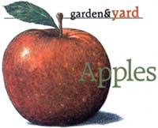
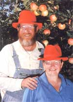
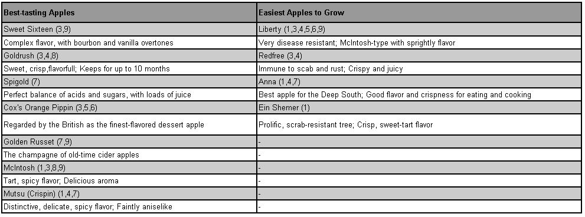

Visit this story's main page to learn more about the North American Fruit Explorers and growing America's best fruit..
Each fall, Tom and Jill Vorbeck, both active NAFEX members, ship apples all over the United States from their Applesource orchard -1,700 apple trees set on 12 hilly acres in Chapin, Illinois. Many varieties planted there are antiques, such as 'Esopus Spitzenburg,' 'Cox's Orange Pippin' and 'Pitmaston Pineapple.'
The couple, former computer analysts who tired of city life, first started selling their conventionally grown (nonorganic) apple samplers to NAFEX members in 1983.
"We wanted to help folks avoid wasting five years waiting for an apple tree to fruit, and then finding they didn't like the fruit," Tom says. "They can order apple varieties from us to sample before planting a tree." The offering was so popular the Vorbecks started marketing their samplers nationwide in 1984.
An Applesource sampler pack contains up to 12 different varieties, each chosen by the customer and shipped at the peak of flavor. If a customer prefers a particular apple, the Vorbecks will help locate trees for planting, part of the NAFEX spirit.
"NAFEX is a mission to share skills, joy and information," Tom says. "It's the love of the fruit."
Tom reminds people to consider their personal tastes when they choose apple varieties for planting. "Do you prefer a sweet or tart apple? Large or small fruit? Intensely flavored or mild? Green, yellow or red? Crisp or soft texture? In apples, one size does not fit all."
Tom's favorites are the early ripening 'Swiss Gourmet,' also known as 'Arlet,' and late-season 'Braeburn.' For folks who prefer sweeter apples, Tom recommends 'Gala,' the season's opener; the explosively crisp 'Honeycrisp' and late-season 'Fuji,' which he says is the world's best-keeping sweet apple.
Two of Jill's favorites are 'Spigold' and 'Goldrush,' a highly flavored, scab-resistant variety that matures at the same time as 'Fuji' and keeps just as long.
Go to this story's image gallery to find a chart of the best-tasting and easiest-to-grow apples.
|
 JOHN BURGOYNE Tom and Jill Vorbeck |
 ROY ROPER |
 |